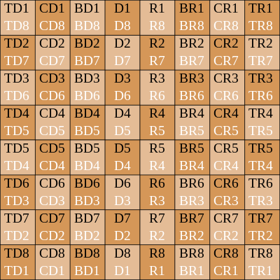

¿Qué es la táctica y cómo la implemento en mis partidas?
La táctica es la acción específica o detallada mediante la cual se lleva a cabo las estrategias, generalmente cubren un período corto ya que están orientadas a objetivos mas a corto plazo que las estrategias, es decir que finalizada la acción se obtiene la ventaja deseada.
Los temas básicos de combinación o táctica son:
-
"los ataques dobles"
El ataque doble, es un elemento táctico que aparece cuando tras realizar una jugada, quedan amenazadas varias piezas del contrario, ello incluye una posible amenaza de mate. Aunque decimos ataque doble puede ser un ataque múltiple. -
"La clavada"
La clavada es una jugada que inmoviliza una pieza enemiga, bien porque ésta tiene detrás a su rey o bien porque su movimiento supondría una pérdida de material. La clavada puede realizarse con la dama, la torre o el alfil. -
"La enfilada"
Se atacan dos piezas situadas en la misma fila, columna o diagonal. -
"La desviación"
Es muy frecuente, desviación de una o mas piezas defensoras para permitir un ataque ganador. -
"La atracción"
Recurso táctico que permite llevar a una pieza adversaria hasta una casilla en la que perece fatídicamente. -
"La intersección u obstrucción"
Consiste en interrumpir la comunicación de dos o más piezas colocando una en el camino.
"Estrategia"
La estrategia es todo lo que se hace antes de entrar al conflicto, luego empieza la táctica, puede verse como un plan que debería permitir mejor distribución de los recursos y medios disponibles o efectos de poderobtener aquellos objetivos; Establecer una estrategia implica conocer de antemano las formas en las que se va a decidir el conflicto y de que forma enfrentarlo conociendo las metas que se desean alcanzar.
"Ataque basculante"
Un mismo jugador puede atacar a un adversario sobre un ala y a continuación sobre la otra.
No es una estrategia aconsejable sino un plan de juego alternativo basado en un ataque que no ha prosperado, porque el adversario ha acumulado excesivas fuerzas ante el primer ataque y ha descuidado sus defensas en la otra ala.
"Ataque por concentración"
Es utilizado cuando la partida exige conseguir un objetivo. En ese caso hay que acumular el máximo de fuerzas. Si es posible hay que sorprender al contrario con la utilización de un de un refuerzo de última hora, sea incorporando una pieza tapada, sea desviando una del oponente.
"Ataque por dominación"
Se llama así al hecho de introducir las fuerzas en el campo contrario solo como elemento de estrategia como base para desencadenar un ataque, o como combinación de mate sin objetivo concreto todavía.
Se presiona primero y se precisa el objetivo después, de acuerdo con la actuación del oponente.
"Ataque por alas"
El caso más general es cuando los dos jugadores proceden al enroque corto. Cada uno de ellos ataca por un ala distinta y si no se bloquea parte del tablero, se tiene, un ataque al enroque por un lado y por el otro un ataque a la bayoneta.
"Ataque de flanco"
Resultan intercesantes y laboriosos. El control de tiempo se convierte en un problema por ser ataques que se basan en un apoyo de peones, la solución es el empleo de agudos sacrificios pero aquí el peligro radica en que los calculos deben ser exactos.
"Ataque de minorías"
Es una maniobra compleja realizada con los peones en cualquier flanco, que tiene por objeto provocar el debilitamiento de la estructura de peones contrarios cuando estas, pese a ser numéricamente superiores y no estar bloqueados, se encuentran en posición rígida y se les puede presionar sobre la base.
¿Cómo registrar mis partida?
A lo largo del tiempo se han desarrollado distintos métodos para escribir nuestras partidas, algunos de estos quedaron obsoletos, como el código Udemann como notación para las partidas telegráficas, la notación para partidas por correspondencia y el sistema descriptivo, que a día de hoy se utiliza para poder leer libros escritos cuando se tomaba como principal/oficial.
Se utiliza lo que se conoce como:
"Notación algebráica"
Las piezas, salvo los peones, se designan por su letra inicial. A los peones no se les da designación alguna.
Las ocho columnas del tablero se designan con letras (a/h), contando de izquierda a derecha y del lado de las piezas blancas.
Las ocho filas se ennumeran de 1 a 8 partiendo de la primera fila de piezas blancas.
(En la posición inicial, las piezas blancas están situadas en las filas 1 y 2 y las negras en las 7 y 8)
Cada casilla queda así representada invariablemente por la combinación de una letra y una cifra.
Se agrega a la inicial de la pieza (salvo el caso del peón) la casilla de partida y llegada. En la anotación abreviada se omite la casilla de partida: Así : Ac1-Ac4= El alfil de la casilla c1 se ha jugado a la casilla f4. En la abreviada : Af4, o bien e7-e5= El peón de la casilla e7 se mueve a la casilla e5. En la abreviada: e5.
Cuando dos piezas iguales pueden ir a la misma casilla, la notación abreviada se completa de la siguiente manera: Si, por ejemplo, dos caballos se encuentran en g1 y d2, el movimiento Cg1-f3 se escribirá abreviadamente Cgf3 y si los caballos se hallasen en g1 y g5, la jugada Cg1-f3 abreviadamente se escribiría C1f3.
0-0=enroque corto
0-0-0=enroque largo
x=toma
+=da jaque
++=da mate

"Sistema descriptivo"
Las piezas y los peones se designan por su letra inicial.
Se distinguen la Torre, Caballo y alfil de Rey de los de Dama añadiéndoles las letras R y D.
Las ocho columnas (De izquierda a derecha del lado de las piezas blancas e inversamente del de las negras) se designan así:
- Columna de la Torre de Dama (TD).
- del Caballo de Dama (CD).
- del Alfil de Dama (AD).
- de Dama (D).
- de Rey (R).
- del Alfil de Rey (AR).
- del Caballo de Rey (CR).
- de la Torre de Rey (TR).
Las ocho filas se ennumeran de 1 a 8 contando desde la primera fila, tanto para las piezas blancas como para las piezas negras.
Se indican la inicial de la pieza jugada y la casilla de llegada. Ejemplo: D4AR= La dama se juega a la cuarta casilla de la columna del alfil de rey.
Cuando dos piezas iguales pueden ir a la misma casilla, se indican la casilla de partida y de llegada. Así T4CR-2CR= La torre se halla en la cuarta casilla de la columna del caballo de rey y se lleva a la segunda casilla de la misma columna.
-
-

"Ajedrez y matemáticas"
El ajedrez tiene un paralelismo con las matemáticas porque ambos ejercitan la memoria, aumentan la concentración, desarrollan el pensamiento lógico;El ajedrez requiere alguna comprensión que se expresa en ideas lógicas encadenadas para una estrategia. Por ejemplo, deberás conocer qué es importante para llevar rápida y armoniosamente tus piezas al principio de la partida, que deberás tener a salvo el rey durante todo el juego o saber evitar debilidades en tu posición o prever cometer errores graves y con ello, como en la vida real, tener en cuenta que debes aprender de tus errores para la siguiente oportunidad.
La imaginación y la creatividad, así como el sentido de la responsabilidad; Te propone ser novedoso e inventivo para mejorar siempre el nivel de tu juego: Existen miles de combinaciones que aun no han sido jugadas. Fortalecen la toma de decisiones; Estás forzado a tomar importantes decisiones sólo influenciadas por tu propio juicio. Eres tú mismo el que decide cada jugada y eso te enseña a crear tu criterio.
Incrementan la paciencia y desarrollan la intuición.
Existe una relación con el modelo de resolución de problemas matemáticos: el llamado modelo de Guzmán.
Este modelo de resolución de problemas no es más que un método práctico que se enseña a los escolares en los colegios para ayudarles a resolver problemas matemáticos. Seguramente te resulte conocido y lo hayas estudiado en tus tiempos de estudiante.
Este famoso modelo contempla cuatro etapas necesarias para llegar a la resolución de un problema:
Familiarización con el problema
Búsqueda de estrategias
Llevar adelante la estrategia
Revisar el proceso y sacar consecuencias
El ajedrez tiene un infinito número de cálculos en un ataque o una defensa en un simple intercambio de jugadas. Calculas con tu propia cabeza y no con una máquina y te agiliza las operaciones que haces en matemáticas del mismo modo.